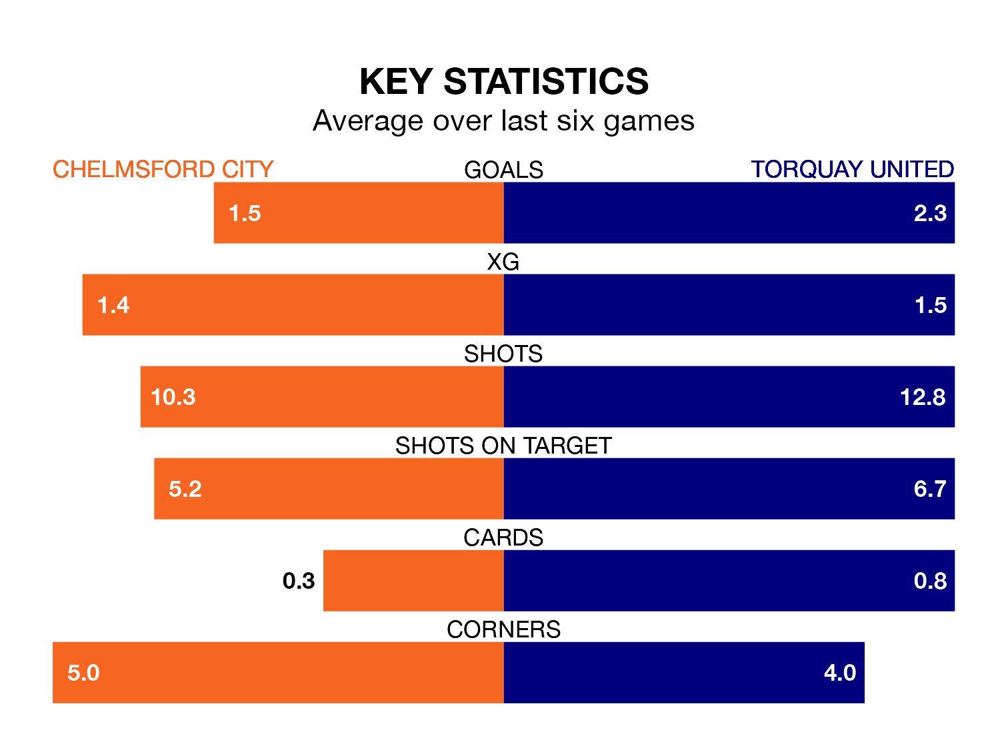

Torquay United visit Chelmsford City at the EMG Inspire Stadium on Saturday on the back of four consecutive wins in National League North and South.
Torquay have picked up 15 points from their last six games, and they face a Chelmsford side who lost their last match, and have collected seven points from the last possible 18.
With 41 goals in 22 games so far this season, Torquay are scoring more than average in the league with 1.9 goals per game. But they are conceding more than average too, letting in 33 goals at a rate of 1.5 per game.
Chelmsford, meanwhile, are average scorers, with 1.4 goals per game. They have conceded 1.1 goals per game.
United are fourth in the table after 22 games, of which they have won 13 and drawn one, earning 40 points.
City are 15 places behind the Gulls in 19th, with eight wins and eight draws putting them on 32 points.
Chelmsford's last match was on December 16, a 2-1 loss against St Albans City, with getting the goal for Chelmsford.
Torquay beat Hemel Hempstead Town 3-2 last time out, also on December 16, with on the scoresheet.
Updated: 15:16, 21/12/23